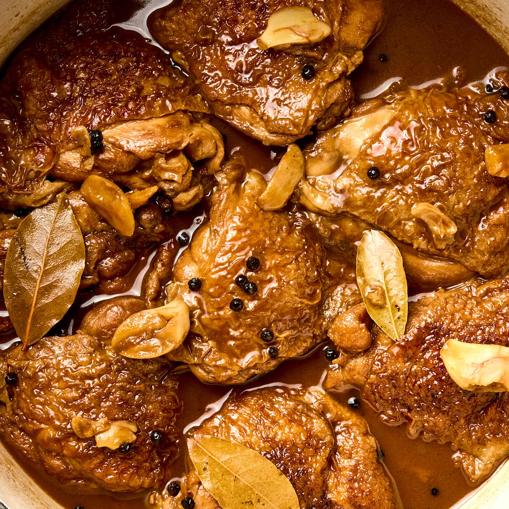

Adobong Manok

Description
This dish is a one of the filipino favorite dish.
The main recipe of this dish are soy sauce and vinegar, you will see on the bottom what are the ingredients of this recipe.
Ingredients
- Meat: 1 kg (about 2.2 lbs) of chicken (thighs/drumsticks) or pork belly
- Aromatics: 1 head of garlic (peeled and smashed), 1 medium onion (sliced, optional), and 3 dried bay leaves
- Sauce: \1/2cup soy sauce, \(\frac{1}{3}\) cup cane vinegar (or white vinegar), and \(\frac{1}{2}\) cup water
- Spices: 1tsp whole black peppercorns
- Add-ins(optional): 1 tsp brown sugar, 1 tbsp cooking oil, or boiled eggs
Marinate The Meat
- Combine the meat,soy sauce,and crushed garlic in a bowl
- Mix well, cover, and marinate for at least 1 hour.
If you have time, marinate for 3 hours or overnight in the fridge. The longer the pork sits, the more flavor goes in.
Sear the Marinated Meat
- Heat a heavy pot over medium heat.
- Remove the pork from the marinade and put it in the pot. Set the marinade aside.
- Cook the pork for a few minutes, turning the pieces so they brown on the outside.
- Pour in the remaining marinade including the garlic once the pork has color.
Simmer With Aromatics
- Add the water, whole peppercorns, and dried bay leaves to the pot. Bring to a boil.
- ower the heat and simmer for 40 minutes to 1 hour, or until the pork is tender. Check the pot once in a while. If the liquid drops too low before the pork is tender, add a little more water.
- Add the water, whole peppercorns, and dried bay leaves to the pot. Bring to a boil.
Finish With Vinegar
- Pour the vinegar into the pot without stirring.
- Let the liquid come back to a boil before you stir.
- Simmer uncovered for 12 to 15 minutes so the vinegar cooks through.
- Taste, add salt if needed, and serve hot over rice. Share and enjoy.
Home